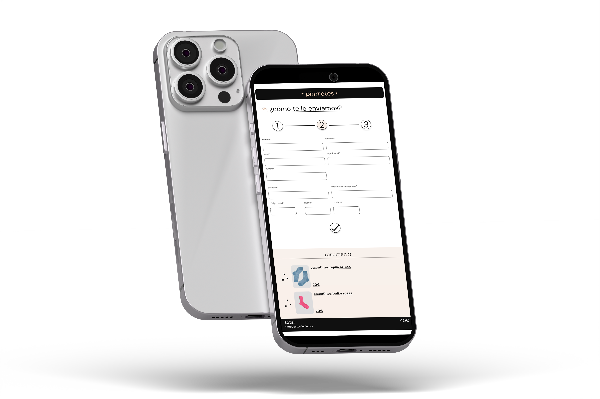
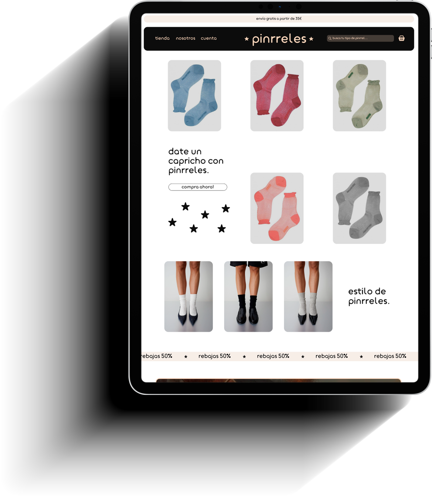
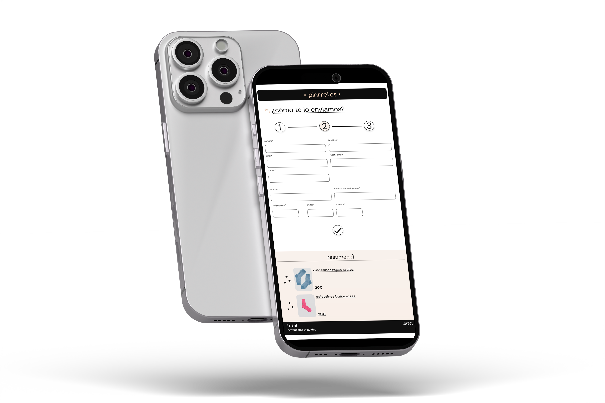
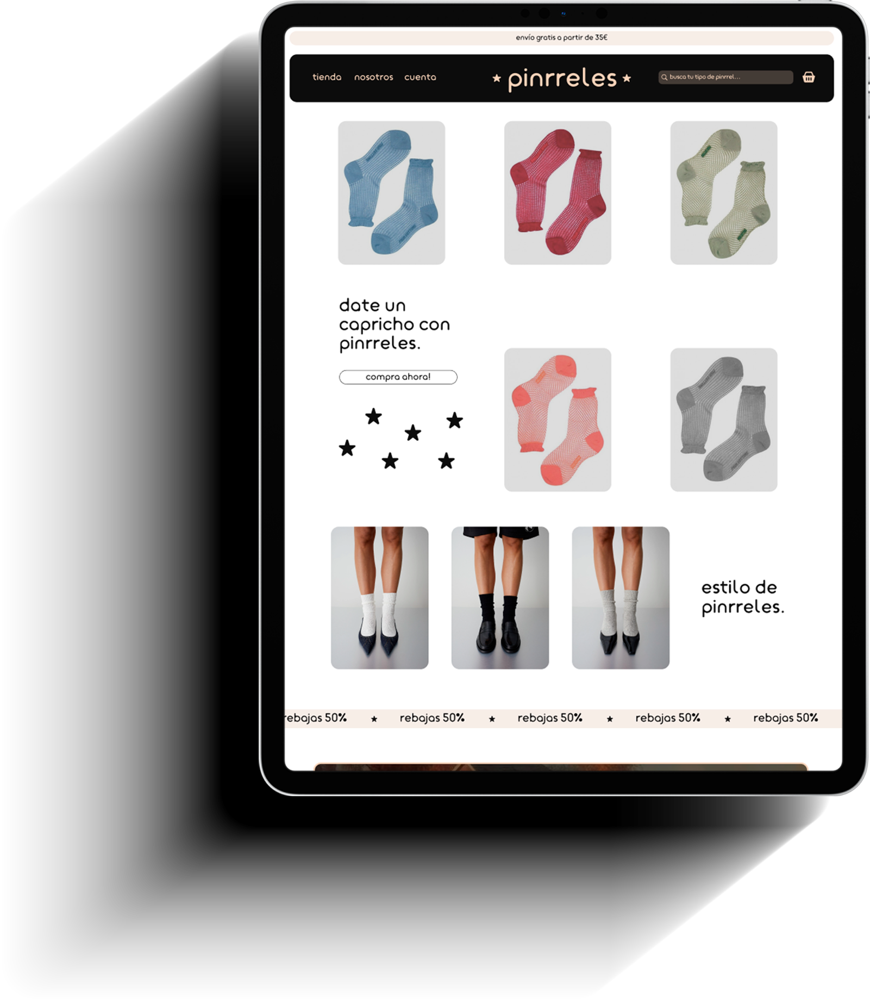

mis proyectos
 



este proyecto se centra en el diseño de una web de calcetines que combine comodidad, naturalidad y un enfoque emocional.

un diseño minimalista y colores suaves que inspiran calma. la app integra deporte, nutrición y terapia en un espacio intuitivo y acogedor. más que herramientas prácticas, Raíz crea una conexión emocional, acompañando a los usuarios en su camino hacia el bienestar integral.
feminidad oscura


una serie de fotografias intensas y enigmáticas que exploran la feminidad desde su lado más oscuro y poderoso. a través de luces tenues, contrastes marcados y miradas profundas, estas fotografías capturan la esencia de una mujer que no teme su sombra: misteriosa, fuerte, sensual y libre,